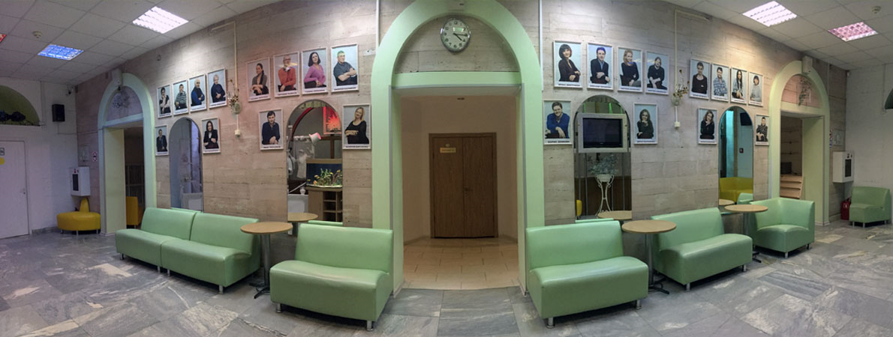

История театра
Театр кукол «Жар-птица» ведет свою историю с 1991 года, когда актеры Московского театра кукол, обладая небольшим репертуарным запасом, не имея собственного помещения, начали ставить спектакли по сюжетам русских народных сказок. Название «Жар-птица» было выбрано не случайно, именно она является символом чистоты, тепла и света - высочайшей ценностью для смелых сказочных героев.
Когда сформировалась стабильная труппа, в коллектив вошли профессиональные режиссеры и художники, театру в фольклорном направлении стало тесно. В репертуаре появились постановки по произведениям зарубежных авторов – «Снежная королева» Ганса Христиана Андерсена, «Любопытный Слоненок» Редьярда Киплинга, «Красная Шапочка и Серый Волк» Шарля Перро, «Холодное Сердце» Вильгельма Гауфа.
В 2011 году дебютировало неформатное направление «Жар-птицы» - спектакль для взрослого зрителя по пьесе Славомира Мрожека «Серенада», объединивший драматический и кукольный жанры.
Спектакли театра неоднократно выдвигались на соискание различных премий. В результате на Московском Театральном Фестивале 2009-2010 театрального сезона постановка «Солнышко и снежные человечки» была удостоена звания «Лучший кукольный спектакль».
За 30 лет существования «Жар-птицы», зрители увидели более пятидесяти спектаклей, поставленных по мотивам многих русских сказок и сказок народом мира. Мастерство творческой и постановочной части, талант актерского состава позволили театру парить в небе искусства жар-птицей и получать благодарные аплодисменты.
Театр сегодня
В настоящее время «Жар-птица» - это уютный театр в Сокольниках, с современным вместительным залом, небольшим фойе и по-настоящему домашней атмосферой.
Зал на 154 места с креслами-трансформерами для маленьких зрителей имеет все необходимое для обеспечения удобства, в том числе и детям с ограниченными возможностями.
В фойе установлены декорации и мягкие кресла для игры спектакля «Клочки по закоулочкам», предназначенного для самых маленьких зрителей. На стенах фойе размещены превосходные картины работы художника Сергея Клевакина, а также портреты актеров и режиссеров театра.
Сегодня «Жар-птица» объединяет сильный, профессиональный коллектив, который превращает добрые, поучительные сказки в красочное завораживающее сценическое действо для детей всех возрастов: «Игра в слова», «Плих и Плюх», «Терем-теремок», «Любопытный слоненок», «Поросенок Чок», «Ау, Машенька!», «Холодное сердце» и другие. Спектакль «Русалочка» выдвигался на соискание Российской национальной театральной премии «Золотая Маска».
Будущее театра
Театр находится в поиске новых форм и сценических открытий, но неизменным останется одно – театр не забудет своего истинного предназначения: формирование интеллекта и восприятия мира посредством театральных образов; пробуждение эмоций любви, сопереживания, понимания доброты, помощи близким и поддержки друзей; эстетическое воспитание.
